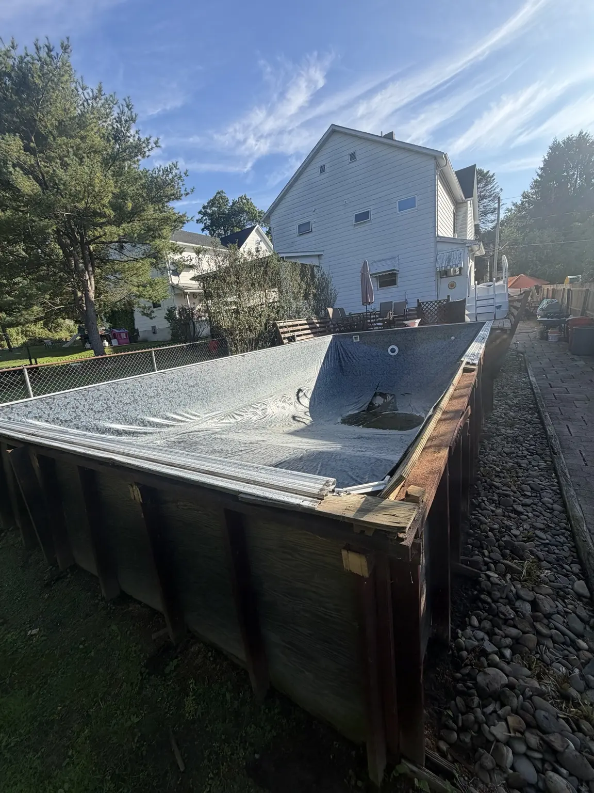
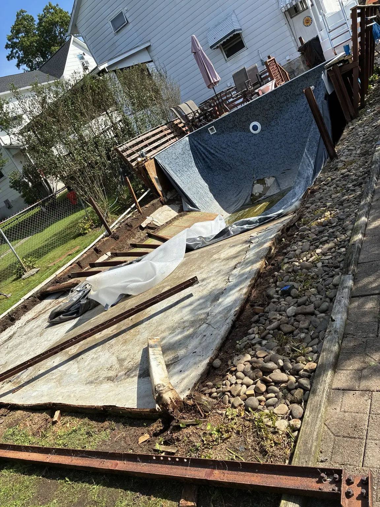
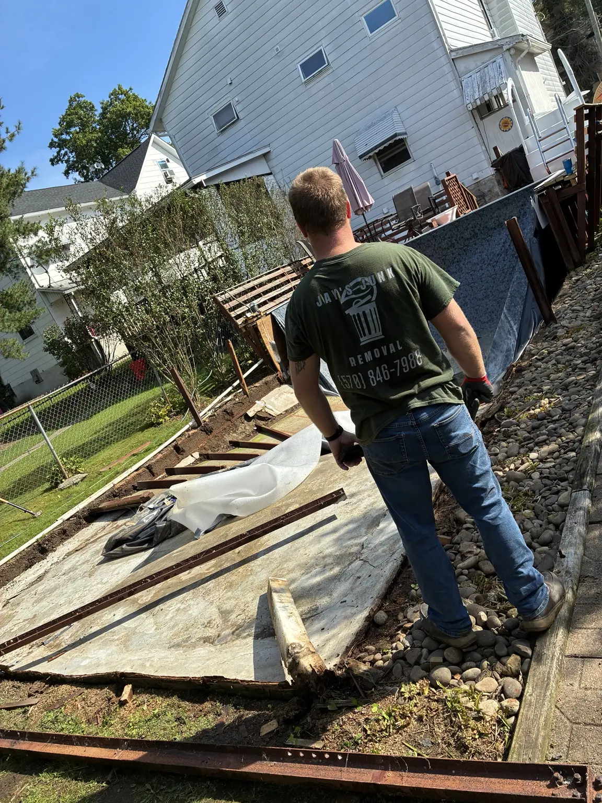
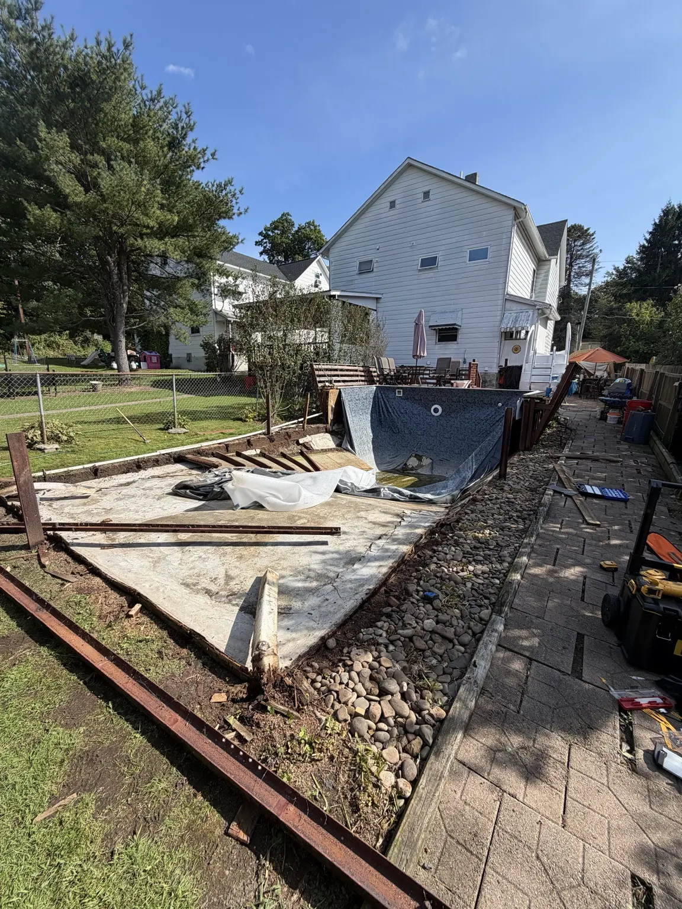
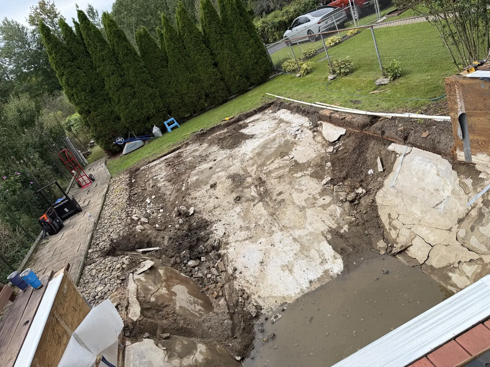

FEATURED PROJECT
A 40+ year-old plywood pool—taken down and hauled away.
This wasn’t a standard above-ground pool. The structure had been built from plywood more than four decades ago. We dismantled the aging pool, broke down the liner and surrounding materials, and removed the debris from the property.
Ask about pool removal


